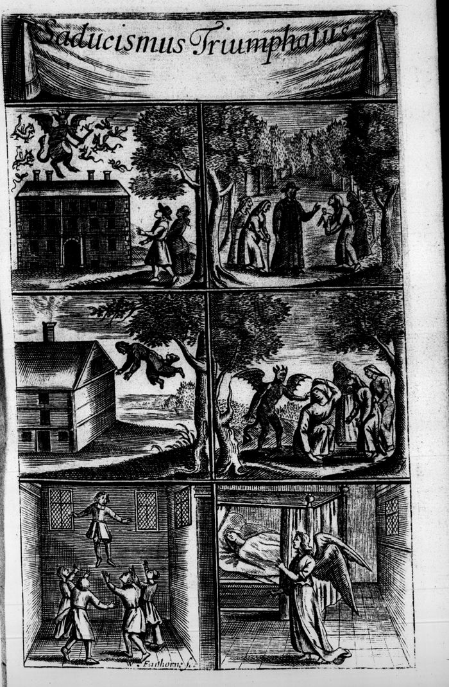
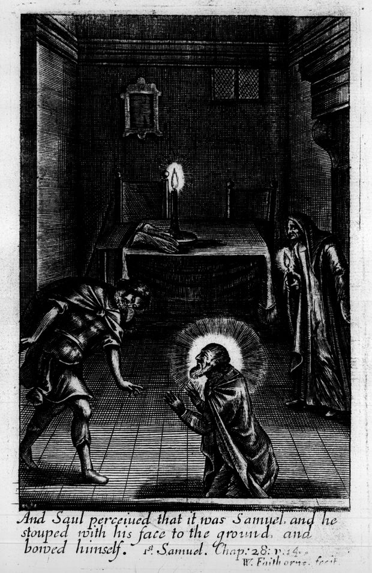
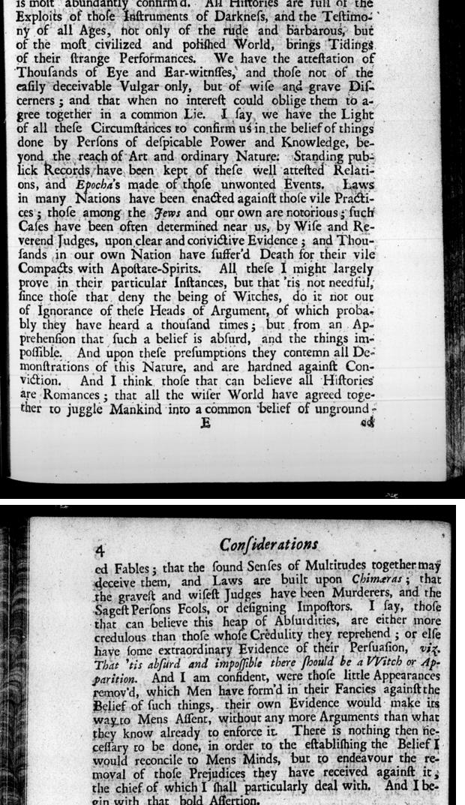

“Atheism is begun in Sadducism” (Preface)

English: Preface, 1700 ed., scan (n50). Highlighted: what Lecky quotes.
… in which Atheism is begun in Sadducism; … And those that dare not bluntly say, There is NO GOD, content themselves (for a fair step and Introduction) to deny there are SPIRITS or WITCHES. Which sort of Infidels, though they are not ordinary among the meer vulgar, yet are they numerous in a little higher rank of Understandings. And those that know any thing of the World, know that most of the looser Gentry, and the small pretenders to Philosophy and Wit, are generally deriders of the belief of Witches and Apparitions. And were this a slight and meer Speculative mistake, I should not trouble my self or them about it. But I fear this error hath a Core in it that is worse than Heresie: … And really I am astonish’d sometimes to think into what kind of an Age we are fallen, in which some of the greatest Impieties are accounted but Bugs, and terrible Names, invisible Tittles, Peccadillo’s or Chimera’s. The sad and greatest instances are SACRILEDGE, REBELLION, and WITCHCRAFT. …
Lecky’s note 122 adds that “the word Atheism was, in the time of Glanvil, used in the very loosest sense” and cites Dugald Stewart, which is not on this page.

“Thousands of Eye and Ear-witnesses” (Considerations about Witchcraft, pp. 3–4)
English: 1700 edition, “Some Considerations about Witchcraft”, pp. 3–4, scan. Long s modernised. Highlighted: Lecky’s quotations in ch. I, notes 123 and 124.

And in order to the proof, that there have been, and are unlawful Confederacies with evil Spirits, by virtue of which the Hellish accomplices perform things above their natural Powers, I must premise, that this being matter of Fact, is only capable of the Evidence of Authority and Sense; and by both these the being of Witches and Diabolical Contracts is most abundantly confirm’d. All Histories are full of the Exploits of those Instruments of Darkness, and the Testimony of all Ages, not only of the rude and Barbarous, but of the most civilized and polished World, brings Tidings of their strange Performances. We have the attestation of Thousands of Eye and Ear-witnesses, and those not of the easily deceivable Vulgar only, but of wise and grave Discerners; and that when no interest could oblige them to agree together in a common Lie. … Laws in many Nations have been enacted against those vile Practices; those among the Jews and our own are notorious; such Cases have been often determined near us, by Wise and Reverend Judges, upon clear and convictive Evidence; and Thousands in our own Nation have suffer’d Death for their vile Compacts with Apostate-Spirits. All these I might largely prove in their particular Instances, but that ’tis not needful, since those that deny the being of Witches, do it not out of Ignorance of these Heads of Argument, of which probably they have heard a thousand times; but from an Apprehension that such a belief is absurd, and the things impossible. And upon these presumptions they contemn all Demonstrations of this Nature, and are hardned against Conviction. And I think, those that can believe all Histories are Romances; that all the wiser World have agreed together to juggle Mankind into a common belief of ungrounded Fables; that the sound Senses of Multitudes together may deceive them, and Laws are built upon Chimæras; that the gravest and wisest Judges have been Murderers, and the Sagest Persons Fools, or designing Impostors, I say, those that can believe this heap of Absurdities, are either more credulous than those whose Credulity they reprehend; or else have some extraordinary Evidence of their Persuasion, viz. That ’tis absurd and impossible there should be a Witch or Apparition.
Glanvill’s argument turns the charge of credulity round: it is the sceptic who must believe that all the judges were murderers. In passing he says that “Thousands in our own Nation have suffer’d Death” for witchcraft, which Lecky does not quote. Lecky’s wording differs in small ways: “all the wise could have agreed to juggle” for “all the wiser World have agreed together to juggle”, and “absurd or impossible” for “absurd and impossible”.
Backlinks
Every place in Rationalism in Europe that links to this page (generated automatically when the site is built).